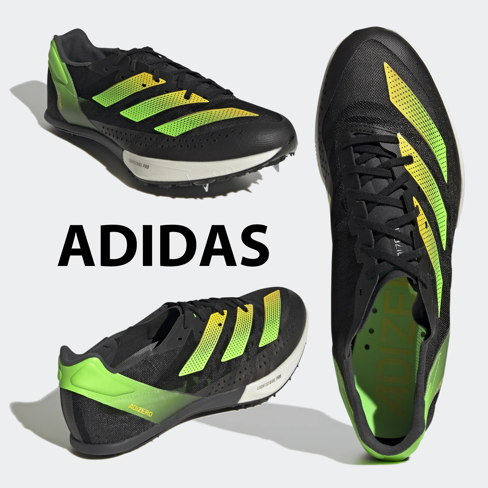

ADIDAS ADIZERO PRIME SP2
Explode out of the starting blocks and feel like you're flying in these adidas sprint spikes. They're made with a carbon and nylon spike plate that delivers ultralight stiffness. The mesh upper locks down your foot while offering targeted support and flex. Lightstrike in the midsole provides super light cushioning to keep you fast through the finish.
